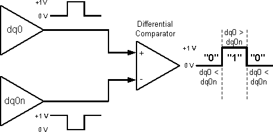

Complementary pins
For each differential signal dq there are two pins: a dq0 and a dq0n (n for "negative").
The logic level of the dq0n pin is always the inverse of the level of the dq0 pin. For a logical 1, dq0 is driven to a high voltage, and dq0n is driven low. For a logical 0, dq0 is driven low and dq0n is driven high. (In the illustration, the voltage levels are arbitrarily shown as 0 V and +1V.)

A comparator uses the difference between voltage levels of dq0 and dq0n to interpret the logic level of the differential signal. Where dq0 is greater than dq0n, the logic level is "1". Where dq0 is less than dq0n, the logic level is "0".
The two differential inputs are measured relative to one another, not relative to ground; a floating ground (which can create problems in the case of single-ended signalling) does not affect the operation of differential signalling systems. Also, the relatively large voltage difference between the two inputs provides good noise immunity. For both these reasons, differential signaling makes it easier to distinguish reliably between logic levels at high speed.
Differential signaling is used only at speeds which require it, because it uses extra pins (and extra channels on the tester). The tester pin count is not merely doubled - it is quadrupled, because at the speeds where differential signaling is used, Dual transmission lines are used as an additional precaution.